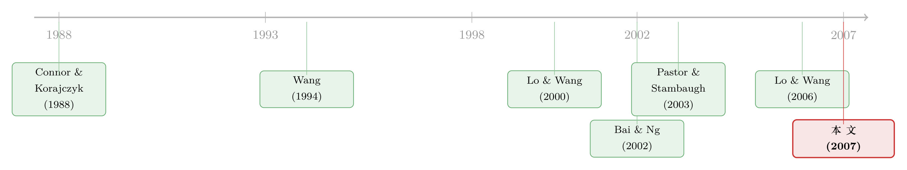

翻看换手率：你买卖股票，多半只是在跟着大盘「再平衡」
本文读的是 Cremers & Mei (2007, Review of Financial Studies)：他们把 Bai-Ng 的面板因子分解搬到了「换手率」上，发现个股换手里有三到五个系统性因子；更关键的是，能用收益率系统性风险解释的那部分，平均占到全部系统性换手的 66%。换句话说，市场上看似纷繁的买卖，很大一块其实只是大家在为同一份风险做「组合再平衡」。
1 引言：成交量是个谜
先抛一个看似平常、却谁也答不上来的问题：今天这么多股票被买进又卖出，到底是为什么？
是因为有人拿到了内幕消息（信息不对称）？是因为大家对同一只股票的看法越掰越开（分歧）？还是因为投资者只是在机械地调整仓位、维持自己想要的风险敞口（组合再平衡）？这些动机在行为金融、流动性、信息不对称的各类模型里都被反复讨论过，可一旦回到数据，研究者却长期被卡在门口——成交量（更准确地说，换手率 turnover）这个变量实在太「不听话」了。
换手率 (turnover) 的定义并不复杂：某期内某只股票的成交股数，除以它的总流通股数。麻烦在于它的统计性质。个股换手率有严重的异方差 (severe heteroscedasticity)——少数股票会在某些周里突然暴量；它还非平稳 (nonstationary)，带着明显的时间趋势（市场整体换手这几十年一路走高）。正因为这两条，传统的多因子估计方法在换手率上几乎用不了，于是过往研究要么只能盯着组合 (portfolios) 看，要么只敢分析少数几只个股。
Cremers 和 Mei 这篇文章的野心，就是把这道门撬开：用 Bai 和 Ng（2002, 2004，下称 BN）发展出来的面板因子方法，对一大批个股的换手率做系统性与特质性 (idiosyncratic) 的分解，从而正面回答「交易里有多少是『齐步走』、多少是『各走各的』」。
2 一个自然的类比：换手率也该有「市场组合」
要谈分解，先得有个模型。Lo 和 Wang（LW，2000, 2006）早就给出了一个换手率的多因子模型——它和我们熟悉的收益率因子模型几乎是镜像的：
$$\tau_{jt} = \tau_j + \delta_{j1}\,g_{1t} + \cdots + \delta_{jK}\,g_{Kt} + \xi_{jt}$$
这里 \(\tau_{jt}\) 是股票 \(j\) 在第 \(t\) 期的换手率，\(g_{kt}\) 是全市场层面的「交易冲击」因子，\(\delta_{jk}\) 是股票 \(j\) 对它的暴露——借用收益率的术语，作者干脆把 \(\delta_{jk}\) 叫做换手 beta (turnover beta)；\(\xi_{jt}\) 则是均值为零、与各因子正交的特质换手。
对这个方程最核心的一处，值得停下来逐项看清楚：
这个写法背后有个深刻的经济学故事，叫共同基金分离 (mutual fund separation)。如果所有投资者都只持有少数几只「基金」（比如 CAPM 世界里的市场组合加无风险资产，即两基金分离），那么当系统性风险变动时，每个人都会按同样的方向调整仓位——交易就被「同步」起来了。LW 模型的一个强假设由此而来：收益率与换手率应当拥有相同数目的系统性因子。这是个可以拿去检验的命题。
直觉上，收益率因子模型回答的是「价格为什么一起动」，换手率因子模型回答的是「成交量为什么一起动」。共同基金分离把两者绑在了一起：同一份系统性风险，既定价了收益，也驱动了交易。
3 真正关键的一步：换个方向算协方差
接着，一个自然的问题是：因子 \(g_{kt}\) 看不见，怎么把它估出来？
教科书式的做法是 Connor 和 Korajczyk（CK，1988）的渐近主成分法，对股票之间的方差-协方差矩阵 \(\mathrm{var}(\tau_i,\tau_j)\) 做主成分。但这里有个致命问题：换手率带着时间趋势，\(\mathrm{var}(\tau_i,\tau_j)\) 根本不是良定义的。
作者的破解办法很巧妙——把矩阵转过来算。不沿股票方向，而沿时间方向求协方差：
$$\mathrm{Var}_t(\tau_t,\tau_s) = N^{-1}\sum_{j=1}^{N}(\tau_{jt}-\bar\tau_t)(\tau_{js}-\bar\tau_s),\qquad \bar\tau_s = N^{-1}\sum_{j=1}^{N}\tau_{js}$$
只要在任一期 \(t\)、\(s\) 上，换手率的横截面均值和方差存在，\(\mathrm{Var}_t(\tau_t,\tau_s)\) 就是良定义的。它依赖的是「\(N\) 充分大」（横截面足够宽），而非「\(T\) 充分大」。这就允许 \(\tau_{jt}\) 自身可以有序列相关、时变的均值和波动——恰恰是换手率的那些「坏毛病」，在这里反而不再是障碍。
有了因子，还得定因子个数。BN（2002）把它处理成一个模型选择问题：先解一个拟合优度的最小化，
$$V(k) = \min_{D^k,\,G^k}\; T^{-1}N^{-1}\sum_{t=1}^{T}\sum_{j=1}^{N}\bigl(\tau_{jt} - D_j^{k}G_t^{k}\bigr)^2$$
再加一个随因子数 \(k\) 增大而上升的惩罚项，构成信息准则：
$$IC(k) = \log\{V(k,\hat G^{k})\} + k\cdot\left(\frac{N+T}{NT}\right)\ln\left(\frac{NT}{N+T}\right)$$
$$\hat K = \arg\min_{0 这套准则的好处，是它同时把横截面 \(N\) 和时间 \(T\) 两个维度都计入了惩罚，而且在异方差、弱序列相关、弱横截面相关下都成立——比 CK（1993）的检验灵活得多。（关于「用主成分定因子个数」这件事在现代资产定价里的延伸，可参见《压缩横截面：因子动物园的尽头，不是更少的因子，而是更聪明的收缩》。） 最后，BN（2004）还提供了一套叫 PANIC（panel analysis of nonstationarity in idiosyncratic and common components）的方法，可以分别检验系统性成分和特质成分里是否藏着单位根。神奇之处在于，估出来的成分上跑标准的 Dickey-Fuller（1979）单位根检验，其极限分布和直接观测序列的一样，于是 5% 临界值 $-2.86$ 照样能用。 方法备好了，把它对着原始换手率 (raw turnover) 一跑——结果令人不安。 如表 2，1967–71 这一段，IC 准则居然挑出了 16 个系统性因子；其它各期也大多在 8 到 16 之间。这显然不对劲：收益率那边稳稳地只有 2 个因子（仅 1997–2001 是 3 个），而且对标准化与否完全稳健。换手率怎么会平白多出十几个因子？ 但真正关键的一步在于作者随后做的诊断。他们意识到，问题正出在那个「严重异方差」上：用原始换手率，等于在方程 (2) 的残差平方和里给那些换手「大起大落」的股票分配了过高的权重，于是 BN 准则被迫把这几只股票（的某种组合）也当成了因子。可这些「因子」并不具有全市场的渗透性。 证据干净利落：把换手率峰度 (kurtosis) 最高的 5% 或 10% 股票剔掉，原始换手率的因子数会骤降 6 到 7 个；而对标准化后的数据，剔不剔这些股票，因子数纹丝不动。 于是反转出现：解法其实就是标准化 (standardize)——先对每只股票的换手率序列去均值、再除以它自己的样本标准差。这在效果上等价于把方程 (1) 的回归从 OLS 换成了 加权最小二乘 (weighted least squares, WLS)，把那几只「巨震」股票的权重压下去。一标准化，1967–71 的因子数就从 16 个直接掉到了 5 个。蒙特卡洛模拟也确认：BN 统计量在标准化换手率上具有良好的小样本性质，在原始换手率上则不然。 这是本文一个被低估的方法论提醒：把一套为「行为良好」的数据设计的因子准则，直接套在重尾、异方差的变量上，得到的「因子数」可能纯粹是几只极端股票的伪影。换手率如此，很多另类数据恐怕也如此。 清理干净之后，真正的图景才浮现出来。 第一，换手率里确实有可观的系统性成分。标准化换手率的第一主成分，在各期能解释 6.5% 到 15.0% 的变异；三到五个因子合起来，可以捕捉个股换手率 15.47%–26.74% 的变异（如表 3）——这个量级，和个股收益率里系统性变异的占比惊人地接近。也就是说，「成交量的共同波动」并不比「价格的共同波动」弱多少。这一发现比 Chordia, Roll & Subrahmanyam（2000）、Hasbrouck & Seppi（2001）等用高频报价数据做的流动性共性研究，给出了一个更强、且带正式因子个数检验的版本。（关于「股票们有多齐心」这件事本身如何预测市场，可参见《市场会涨还是会跌？别盯着波动率，去看股票们「有多齐心」》。） 第二，换手率的因子数比收益率多。收益率一以贯之是 2 个因子，换手率却是 3 到 5 个。这一条直接否定了 LW 模型那个更严格的假设——「收益率与换手率应有相同数目的系统性因子」。顺带一提，LW 自己当年只找到 1 到 2 个换手因子，作者认为那是因为他们用的是 10 个按 beta 排序的组合 (beta-sorted portfolios)；正如 Shukla & Trzcinka（1990）指出的，排序组合会让人少数到因子。用一大截面的个股，才看得到真相。 第三，也是全文的落点——66%。作者进一步问：换手率里那些系统性成分，有多少能被收益率的系统性风险解释？答案是，收益率系统性风险平均能解释全部系统性换手变异的 66%。这意味着，基于共同基金分离的组合再平衡 (portfolio rebalancing)，确实是股票交易一个非常重要的动机——你我看似主动的买卖，一大半只是在为同一份系统性风险被动调仓。 但故事没有就此圆满收场。剩下那约三分之一的系统性换手，是收益率因子解释不了的；再加上换手因子本就比收益因子多，这都说明：把价格与成交量统一进同一个多因子资产定价-交易框架的理论工作，还没有做完。LW（2003）那个「市场因子 + 对冲因子」的两因子模型，看来漏掉了好几个系统性因子。 最后，作者还顺手做了一个应用（第 4 节）：用多因子模型估出的特质换手，仿照 Pastor & Stambaugh（2003）构造平均周度流动性指标，结果表明——好几种常用的换手率度量，可能显著低估了股票交易的真实冲击。换手率究竟该怎么量，本身就是一道没有标准答案的题。（关于「把成交价从成交量里解放出来、重新丈量流动性」的同类思路，可参见《把「成交价」从「成交量」里解放出来——重新丈量公司债的流动性》。） 把这条线索捋一捋，会看到两股研究传统在这篇文章里汇合。 一股，是交易量的理论。Wang（1994）、Campbell, Grossman & Wang（1993）这些早期工作，把成交量与信息、风险分担联系起来；到了 Lo & Wang（2000）才系统性地提出「换手率应当像收益率一样做因子分解」，并把它建立在组合理论与共同基金分离之上，随后 LW（2003, 2006）又把它推进到跨期资本资产定价的框架里。 另一股，是因子估计的计量技术。Connor & Korajczyk（1988, 1993）的渐近主成分法解决了「因子看不见」的问题，而 Bai & Ng（2002, 2004）则给出了「该选几个因子」「成分里有没有单位根」这两个关键问题的严格答案。  Cremers & Mei（2007）站的位置，恰好是这两股传统的交叉口：用 BN 的工具，去检验 LW 的理论，并且第一次在一大批个股而非排序组合上把换手率干净地拆开。它的贡献与其说是提出新模型，不如说是把一个本来「测不准」的对象，第一次量准了。 Q：标准化（WLS）把 16 个因子压到 5 个，会不会是「为了好看而抹掉了真实的因子」？ 作者的反例做得相当干净：剔除峰度最高的 5%–10% 股票后，原始换手率因子数骤降 6–7 个，而标准化数据的因子数毫不变化。这说明被压掉的那十几个「因子」并不具有全市场渗透性，只是几只极端股票的伪影；标准化恰恰是把它们的权重降下去，留下真正普遍的成分。 Q：换手率明明有强烈的时间趋势，为什么作者坚持不做一阶差分？ 因为他们用（增广）Dickey-Fuller 检验，在所有七个时段、对所有个股以及分解出的系统性、特质成分，都拒绝了单位根——趋势是确定性趋势而非随机趋势。在没有单位根时强行差分，只会把噪声打进特质项、放大估计误差。识别上，他们靠的是把协方差沿时间方向算（\(N\)-一致性），从而绕开了趋势带来的不良定义。 Q：那个 66% 到底是什么意思，是「66% 的交易都是再平衡」吗？ 要小心措辞。它是「收益率的系统性风险能解释系统性换手变异的约 66%」，分母是已经被识别为系统性的那部分换手，不是全部换手。换言之，是「在那些齐步走的交易里，三分之二能追溯到收益率因子」。特质换手（各走各的那部分）不在此列。 Q：为什么用按 beta 排序的组合会「少数」到因子？ 排序与组合的过程本身会把横截面里的特质变异平均掉，也可能把多个潜在因子混叠成少数几个主导方向。Shukla & Trzcinka（1990）早有此论。这也是为什么 LW 用 10 个组合只看到 1–2 个换手因子，而本文用上千只个股能识别出 3–5 个——这是个一般性的方法论警示。 Q：收益率稳稳 2 个因子、换手率 3–5 个，这「不对称」本身要紧吗？ 很要紧。它直接证伪了共同基金分离的强形式——若投资者真的只持有 \(K+1\) 只基金，收益与换手就该共享同样数目的因子。多出来的换手因子说明，除了系统性风险再平衡之外，还有别的力量（信息、流动性冲击、分歧）在同步地驱动交易，而这些尚未被现有资产定价模型纳入。 Q：这套方法只能用在换手率上吗？ 不止。本文真正可迁移的，是「重尾面板 + 跨期协方差主成分 + BN 信息准则 + PANIC 单位根检验」这一整套流程。任何具有严重异方差、非平稳、又疑似有隐含因子结构的面板（成交量、流动性指标、资金流、甚至另类数据）都适用——前提是先想清楚要不要标准化。 1. 公司债市场的「换手率因子」有几个？ 【经济故事】股票换手里三分之二是组合再平衡；而公司债是 OTC、做市商驱动、流动性高度分割的市场，再平衡的逻辑可能完全不同——债的交易也许更多由信用事件、评级变动、保险公司/基金的负债端冲击驱动。把本文方法搬到 TRACE 上，看系统性换手因子数与「收益率因子解释的比例」是否远低于股票的 66%，本身就是一个干净的对照。
【可行性】中。数据有 TRACE 成交 + Mergent FISD，可构造债券级周度/月度换手；难点在公司债成交极稀疏（很多债一周零成交），需要先解决「离散/零膨胀」问题，BN 准则在稀疏面板上的表现要重新校验。 2. 外资持有人是不是「额外的换手因子」？ 【经济故事】若某段时间出现全球性「逃向质量」（本文脚注提到的 LTCM 情形），跨国投资者会同步抛售，这会在换手率里表现为一个与收益率因子无关的系统性因子——恰好对应那解释不了的三分之一。能否用外资持股比例的横截面差异，把这个因子「指认」出来？
【可行性】中。需要 FactSet/EPFR 的持有人国别数据匹配到个股或个券；识别上可用「可投资度 (investability) 放开」这类准自然实验做外生冲击。doable，但把估出的统计因子与外资行为对上号需要额外的经济学假设。 3. 特质换手能不能当作「信息交易」的更干净代理？ 【经济故事】本文已暗示特质换手与公司特定信息相关。若用多因子模型剥掉系统性部分后的特质换手，去预测盈余公告、并购、内幕交易窗口前的异常成交，它会不会比原始换手率更灵敏？这给信息不对称的实证测度提供了一把新尺子。
【可行性】高。所需只是把本文的分解残差 \(\hat\xi_{jt}\) 接到事件研究框架上，数据（CRSP + 事件库）齐备，识别清晰。 4. 因子数随时代上升，是结构变迁还是市场结构变化？ 【经济故事】本文七个时段的换手因子数在 3–5 间波动，且原始换手的趋势一路走高。指数化投资、ETF、算法交易在 1990 年代后兴起，是否系统性地改变了「再平衡 vs. 信息交易」的占比？把样本延伸到 2001 年之后，看 66% 这个数字是升是降，可以直接对话被动投资对市场质量的争论。
【可行性】高。CRSP 数据可一直延伸到当下，方法现成；唯一要小心的是分母（系统性换手）的定义在不同制度下要保持可比。4 一个意外：16 个因子是从哪冒出来的？
5 核心结果：三分之二的交易，是在「随大流」
6 文献脉络
7 评论与延伸（Q&A + 研究方向）
(a) 几个可能的疑问
(b) 几个可能的研究问题与提案
参考文献